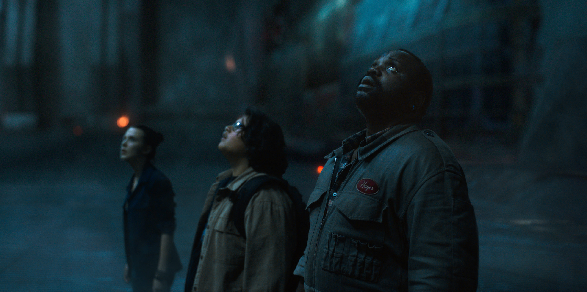
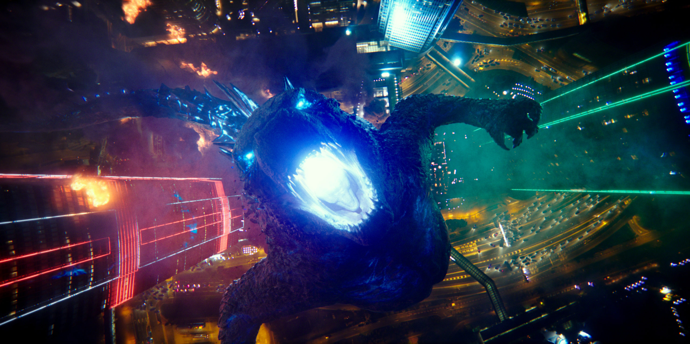
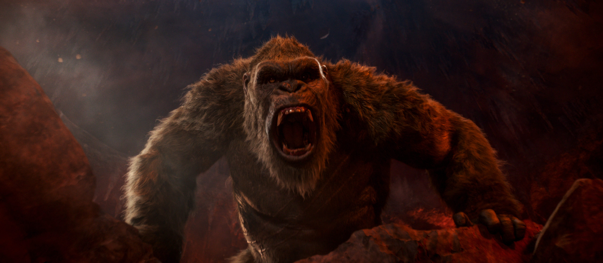

Dos titanes legendarios se enfrentan en una batalla épica que sacudirá el destino del mundo.
Conoce másEn un momento en que los monstruos caminan por la Tierra, la lucha de la humanidad por su futuro pone a Godzilla y Kong en un curso de colisión que verá a las dos fuerzas más poderosas del planeta chocar en una batalla espectacular. Cuando Monarch se embarca en una peligrosa misión en un terreno inexplorado y descubre pistas sobre los orígenes de los Titanes, una malvada conspiración humana amenaza con borrar a las criaturas, tanto buenas como malas, de la faz de la tierra para siempre.
La historia de Godzilla en el MonsterVerse comienza millones de años atrás, en una era donde la Tierra estaba dominada por enormes criaturas llamadas Titanes. Entre ellas, Godzilla era uno de los depredadores alfa: un ser antiguo, casi mitológico, que mantenía el equilibrio natural entre los demás Titanes. Durante eras, Godzilla y otros Titanes vivieron en un mundo saturado de radiación, que era su fuente de energía vital. Con el tiempo, la radiación en la superficie disminuyó, y los Titanes se retiraron a dormir en las profundidades de la Tierra, donde las energías nucleares eran más fuertes. Godzilla quedó en estado de hibernación, pero no murió: esperaba bajo el océano, siempre vigilante. En los tiempos modernos, la organización Monarch descubre pruebas de la existencia de estos Titanes. La actividad humana, especialmente las pruebas nucleares, empieza a perturbar su letargo. No fue casualidad: algunas pruebas atómicas de los años 50 no fueron "experimentos", sino intentos de matar a Godzilla, al percibirlo como una amenaza. En 2014, Godzilla resurge para enfrentarse a los MUTOs (Organismos Terrestres Masivos No Identificados), dos monstruos parásitos que absorben radiación y amenazan con destruir el equilibrio natural. En la batalla final en San Francisco, Godzilla destruye a los MUTOs y, tras su victoria, se retira pacíficamente al mar. La humanidad, sorprendida, empieza a verlo no como una amenaza absoluta, sino como un posible protector del planeta.
King Kong es un gigantesco gorila prehistórico que habita en la misteriosa Isla Calavera, un lugar perdido en el océano donde han sobrevivido animales y criaturas de tiempos remotos, como dinosaurios y monstruos gigantes. Su origen no es natural, Kong pertenece a una especie antigua de simios gigantes que, con el paso de los siglos, fueron muriendo. Para cuando los humanos lo conocen, él es el último de su especie, una criatura solitaria, poderosa pero también trágica. En la isla, Kong es tratado como una especie de dios protector por los nativos. Lo veneran y a veces le ofrecen sacrificios para apaciguarlo. Aunque la isla es extremadamente peligrosa, llena de criaturas mortales, Kong se mantiene como el rey absoluto del lugar, defendiendo su territorio y a veces incluso a personas de otros monstruos. La tragedia de King Kong comienza cuando los humanos, en su codicia, intentan explotarlo. Lo ven como una maravilla, un espectáculo para la civilización moderna. Kong, arrancado de su hogar y llevado a la ciudad, no puede adaptarse. La civilización humana no entiende su naturaleza salvaje, y Kong no entiende la violencia y el ruido de la ciudad. Aunque es una bestia inmensa y poderosa, King Kong tiene emociones humanas: siente curiosidad, miedo, afecto y tristeza. Esto lo convierte en un personaje profundamente trágico: no es malvado por naturaleza; es una criatura desplazada y, finalmente, destruida por un mundo que no tiene lugar para seres como él.
